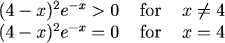
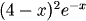
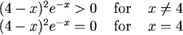
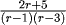
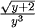
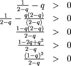
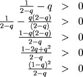

Checking Sign of Expressions and Solving Nonlinear Inequalities
Checking the Sign of an Expression
When an expression is a product or a quotient, we can determine the sign of the expression on an interval by looking at the sign of each factor over the interval.
Examples
For each expression, we determine the values of x (the independent variable) which make it positive, negative, zero, or undefined.


$$ \begin{array}{c|c|c} (-)(-) & (+)(-) & (+)(+)\\ \hline \end{array}\\ \qquad \quad -1\qquad \quad 7\qquad \quad x $$

$$ \begin{array}{c|c|c|c} \frac{(-)}{(-)(-)} & \frac{(+)}{(-)(-)} & \frac{(+)}{(+)(-)} & \frac{(+)}{(+)(+)}\\ \hline \end{array}\\ \quad \quad -5/2\qquad \quad 1\qquad \quad 3 \qquad \quad r $$

$$ \begin{array}{c|c|c} Undefined & \frac{(+)}{(-)} & \frac{(+)}{(+)} \\ \hline \end{array}\\ \qquad \qquad -2\quad \quad 0\qquad y $$

For each expression, we determine the values of x (the independent variable) which make it positive, negative, zero, or undefined.
1.
The expression \(e^{-x}\) is always positive, and \((4-x)^2\) is positive for any value \(x\) except \(x=4\), where it equals zero. Therefore,

2.
The expression will be zero when \(x=-1\) or \(x=7\). Therefore product can change sign at \(x=-1\) or \(x=7\).
We check the sign of the expression by looking at the sign of each factor over the intervals established by dividing the number line at these points.
It will be positive when both factors have the same sign.
$$ \begin{array}{c|c|c} (-)(-) & (+)(-) & (+)(+)\\ \hline \end{array}\\ \qquad \quad -1\qquad \quad 7\qquad \quad x $$
Be sure it is clear how the different (+) and (-) factors are calculated in the figure above! (If it isn't obvious, check below, following the answer.) Therefore,
Ok, how did we find the (+) and (-) factors? If \(x\lt-1\), the factor (x+1) must be negative. Thus in the left-most section of the number line, the first term is (-). Similarly,
if \(x \lt -1\), the factor (x-7) is also negative. If \(-1 \lt x \lt 7\), the factor \((x+1)\) is positive, so the first factor for that section of the number line is (+). But in this case
\((x-7)\) is still negative, so the second is (-). And so on.
3.

A fraction is zero when its numerator is zero, so this expression is zero if \(r=-5/2\). The values \(r=1\) and \(r=3\) make the fraction undefined because the denominator is zero there.
We divide the number line at each of these points and check the sign of each factor on each interval. This gives:
$$ \begin{array}{c|c|c|c} \frac{(-)}{(-)(-)} & \frac{(+)}{(-)(-)} & \frac{(+)}{(+)(-)} & \frac{(+)}{(+)(+)}\\ \hline \end{array}\\ \quad \quad -5/2\qquad \quad 1\qquad \quad 3 \qquad \quad r $$
Thus,
4.

The expression is zero if \(y=-2\). It is not defined if \(y\) is less than -2, because we cannot take the square root of a negative number.
Furthermore, it is not defined when \(y=0\), because of the zero in the denominator. The radical is always positive (where defined), so the numerator is positive.
Because the cube of a negative number is negative, we can visualize the signs on each of the intervals as shown below.
$$ \begin{array}{c|c|c} Undefined & \frac{(+)}{(-)} & \frac{(+)}{(+)} \\ \hline \end{array}\\ \qquad \qquad -2\quad \quad 0\qquad y $$
Therefore,
Solving Nonlinear Inequalities by Factoring
We can often solve polynomial and rational inequalities by starting out the same way we would with an equation and the using a number line to find the intervals on which the inequality holds. However, remember to be careful when using operations that can reverse the inequality.
Examples
For each expression, we solve the inequality.

$$ \begin{array}{c|c|c|c} (-)(-)(-) & (-)(+)(-) & (+)(+)(-) & (+)(+)(+)\\ \hline \end{array}\\ \qquad \quad -3\qquad \qquad 0\qquad \qquad 1 \qquad \qquad x $$




For each expression, we solve the inequality.
1.
The left hand side equals zero for \(x=0\), \(x=-3\) and \(x=1\). To solve the inequality we want to select the x-values for which the left hand side is negative.
We check signs over the four intervals created by marking \(x=0\), -3 and 1.
$$ \begin{array}{c|c|c|c} (-)(-)(-) & (-)(+)(-) & (+)(+)(-) & (+)(+)(+)\\ \hline \end{array}\\ \qquad \quad -3\qquad \qquad 0\qquad \qquad 1 \qquad \qquad x $$
So
And therefore
2.
First, put zero on the right and combine fractions on the left:

We want this quotient to be positive, so the numerator and denominator must have the same sign. Notice that \(q\) cannot equal 2.
Because it is a squared term, the numerator is never negative, and the denominator is positive if \(2-q \gt 0\), which is \(q \lt 2\).
However, the numerator is zero if \(q=1\), so this must be excluded. Therefore
Practice
Question 1:
Question 2:
Question 2:
Return to Main